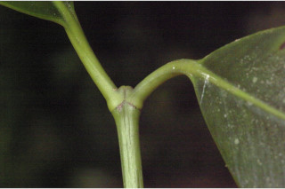
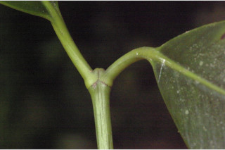
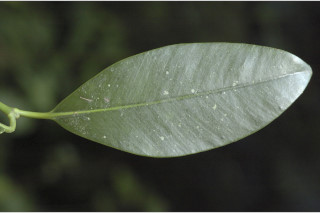
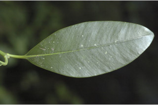

Trees up to 20 m tall.
20 ಮೀ ಎತ್ತರದವರೆಗೆ ಬೆಳೆಯುವ ಮರಗಳು.
20 മീറ്റര് വരെ ഉയരത്തില് വളരുന്ന മരങ്ങള്.
மரங்கள் 20 மீ. உயரம் வரை வளரக்கூடியது.
Bark smooth, lenticellate; blaze orange-red.
ತೊಗಟೆ ನಯವಾಗಿದ್ದು ವಾಯು ವಿನಿಮಯ ಬೆಂಡುರಂಧ್ರ ಸಮೇತವಾಗಿರುತ್ತದೆ. ಕಚ್ಚು ಮಾಡಿದ ಜಾಗ ಶ್ವೇತ ಬಣ್ಣದಲ್ಲಿರುತ್ತದೆ.
ശ്വസനരന്ധ്രങ്ങളോടുകൂടിയ, മിനുസമാര്ന്ന പുറംതൊലി; വെട്ടുപാടിന് ഓറഞ്ച് - ചുവപ്പ് നിറം.
மரத்தின் பட்டை வழுவழுப்பானது, லெண்டிசெல் உடையது; உள்ப்பட்டை ஆரஞ்சு-சிவப்பு நிறமானது.
Branchlets stout, angular, glabrous, drying yellowish.
ಕಿರುಕೊಂಬೆಗಳು ಬಲಿಷ್ಠವಾಗಿದ್ದು, ಕೋನಯುಕ್ತವಾಗಿದ್ದು ರೋಮರಹಿತ ವಾಗಿರುತ್ತವೆ ಹಾಗೂ ಒಣಗಿದಾಗ ಹಳದಿ ಬಣ್ಣದಲ್ಲಿರುತ್ತವೆ.
ഉണങ്ങുമ്പോള് മഞ്ഞനിറമാകുന്നതും, അരോമിലവും കോണോടുകൂടിയതുമായ, ദൃഢമായ ഉപശാഖകള്.
சிறிய நுனிக்கிளைகள் தடித்தது, குறுக்குவெட்டுத் தோற்றத்தில் கோணங்களுடையது, உரோமங்களற்றது, உலரும் போது மஞ்சள் நிறமானவை.
Latex cream colored.
ಸಸ್ಯಕ್ಷೀರ ಕೆನೆ ಬಣ್ಣ ಹೊಂದಿರುತ್ತದೆ .
ക്രീം നിറത്തിലുള്ള സ്രവം.
சாறு கிரீம் நிறமானது.
Leaves simple, opposite, decussate; petiole stout, sheathing at base, glabrous, planoconvex, 1-2.5 cm long; lamina 7-15 x 3-7 cm, broadly obovate, sometimes elliptic, apex rounded, sometimes retuse, base attenuate, margin revolute, thickly coriaceous; secondary_nerves many closely parallel and terminates at thick margin; latex ducts visible beneath when dry.
ಎಲೆಗಳು ಸರಳವಾಗಿದ್ದು,ಕತ್ತರಿಯಾಕಾರದ ಅಭಿಮುಖ ಜೋಡನಾ ವ್ಯವಸ್ಥೆ-ಯಲ್ಲಿರುತ್ತವೆ; ಎಲೆತೊಟ್ಟುಗಳು ಧ್ರುಢವಾಗಿದ್ದು, ಬುಡಭಾಗದಲ್ಲಿ ಒರೆಯನ್ನು ಹೊಂದಿದ್ದು ರೋಮರಹಿತವಾಗಿರುತ್ತವೆ ಹಾಗೂ ಸಪಾಟಪೀನಮಧ್ಯ ಆಕಾರದಲ್ಲಿದ್ದು, 1 ರಿಂದ 2.5 ಸೆಂ.ಮೀ ಉದ್ದವಿರುತ್ತವೆ; ಎಲೆಪತ್ರಗಳು 7 -15 X 3 - 7 ಸೆಂ.ಮೀ ಗಾತ್ರ ಹೊಂದಿದ್ದು ವಿಶಾಲ ಬುಗುರಿ ಅಥವಾ ಕೆಲವು ವೇಳೆ ಅಂಡವೃತ್ತ ಆಕಾರ ಹೊಂದಿರುತ್ತ, ತುದಿ ಸಾಮಾನ್ಯವಾಗಿ ದುಂಡಾಗಿರುತ್ತದೆ ಅಥವಾ ಕೆಲವು ವೇಳೆ ದುಂಡನೆಯ ಅಗ್ರದಲ್ಲಿ ತಗ್ಗುಳ್ಳ ಆಕಾರದಲ್ಲಿರುತ್ತದೆ, ಎಲೆಯ ಬುಡ ಒಳಬಾಗಿದ ತಳವುಳ್ಳ ಮಾದರಿಯನ್ನು ಹೊಂದಿರುತ್ತವೆ, ಎಲೆಗಳ ಅಂಚು ಹಿಂಸುರುಳಿಯಾಗಿರುತ್ತದೆ,ಎಲೆಗಳು ದಪ್ಪವಾದ ತೊಗಲನ್ನು ಹೋಲುವ ಮಾದರಿಯಲ್ಲಿರುತ್ತವೆ; ಎರಡನೇ ದರ್ಜೆಯ ನಾಳಗಳು ಬಹುಸಂಖ್ಯೆಯಲ್ಲಿದ್ದು ಕಡಿಮೆ ಅಂತರವುಳ್ಳ ಸಮಾಂತರದಲ್ಲಿದ್ದು ಮಂದವಾದ ಅಂಚಿನಲ್ಲಿ ಕೊನೆಗೊಳ್ಳುತ್ತವೆ; ಪತ್ರಗಳು ಒಣಗಿದಾಗ ತಳಭಾಗದಲ್ಲಿ ಸಸ್ಯಕ್ಷೀರ ಕೊಳವೆಗಳು ಕಾಣುವಂತಿರುತ್ತವೆ.
സമ്മുഖ, ഡെക്കുസേറ്റ് ക്രമത്തിലുള്ള, ലഘുപത്രങ്ങള്; 1 സെ.മി മുതല് 2.5 സെ.മി വരെ നീളമുള്ളതും, മുകള്ഭാഗം പരന്നും കീഴ്ഭാഗം ഉരുുമിരിക്കുന്ന ഘടനയോടു കൂടിയതും, അരോമിലവും, ദൃഢവുമായ ഇലഞെട്ടിന്റെ കീഴ്ഭാഗം ഉറയോടുകൂടിയതാണ്; പത്രഫലകത്തിന് 7 സെ.മി മുതല് 15 സെ.മി വരെ നീളവും 3 സെ.മി മുതല് 7 സെ.മി വരെ വീതിയും, വീതിയേറിയ അപഅണ്ഡാകാരവും, ചിലപ്പോള് ദീര്ഘവൃത്താകാരവുമാണ്, പത്രാഗ്രം വൃത്താകാരത്തിലും, ചിലപ്പോള് അറ്റത്തൊരു കൂനുഷോടുകൂടിയ വത്താകാരവുമാണ്. പത്രാധാരം നേര്ത്തവസാനിക്കുന്ന വിധത്തിലാണ്, അരികുകള് പിന്നാക്കം മടങ്ങിയതാണ്,. കട്ടിയേറിയ ചര്മ്മില പ്രകൃതം; കട്ടിയേറിയ അരികില് അവസാനിക്കുന്ന വളരെ അടുത്ത, സമാന്തരമായി പോകുന്ന ധാരാളം ദ്വിതീയ സിരകള്; ഉണങ്ങുമ്പോള് സ്രവക്കുഴലുകള് കീഴ്ഭാഗത്ത് വ്യക്തമാകുന്നു.
இலைகள் தனித்தவை, எதிரடுக்கமானவை, குறுக்குமறுக்கமானவை; இலைக்காம்பு தடித்தது, தளத்தில் உறை போன்றது, உரோமங்களற்றது, குறுக்குவெட்டுத் தோற்றத்தில் பிளேனோகான்வக்ஸ், 1-2.5 செ.மீ. நீளமானது; இலை அலகு 7-15 X 3-7 செ.மீ., அகன்ற தலைகீழ் முட்டை வடிவம், சிலசமயங்களில் நீள்வட்ட வடிவானது, அலகின் நுனி வட்டமானது, சிலசமயங்களில் சிறு பிளவுடையது (ரெட்யுஸ்), அலகின் தளம் அட்டனுவேட், அலகின் விளிம்பு பின்புறம் வளைந்து (ரெவலுட்) காணப்படும், தடித்த கோரியேசியஸ்; இரண்டாம் நிலை நரம்புகள் அதிகமானது, நெருக்கமானவை, இணையானவை, தடித்த விளிம்பு வரை செல்பவை; உலரும் போது சாற்றை சுரக்கும் குழாய்கள் தெளிவாக காணப்படுபவை.
Flowers dioecious; male in clusters; female flowers terminal, solitary.
ಗಂಡು ಮತ್ತು ಹೆಣ್ಣು ಹೂಗಳು ಪ್ರತ್ಯೇಕ ಸಸ್ಯಗಳಲ್ಲಿರುತ್ತವೆ; ಗಂಡು ಹೂಗಳು ಗುಚ್ಛಗಳಲ್ಲಿರುತ್ತವೆ.; ಹೆಣ್ಣು ಹೂಗಳು ಒಂಟಿಯಾಗಿದ್ದು ತುದಿಯಲ್ಲಿರುತ್ತವೆ.
ആണ്-പെണ് പൂക്കള് വ്യത്യസ്ത മരങ്ങളില് ഉാകുന്നു; ആണ് പൂക്കള് കൂട്ടമായുാകുന്നു; പെണ് പൂക്കള്, ഒറ്റക്ക് ഉച്ഛസ്ഥമായി ഉാകുന്നു.
மலர்கள் ஒர்பாலானவை, ஈரகம் கொண்டவை; ஆண்மலர்கள் தொகுப்பாக காணப்படுபவை; பெண்மலர்கள் தண்டின் நுனியில், தனித்தவை.
Berry, ellipsoid, to 6.5 x 5 cm, echinate; 1-3 seeded.
ಬೆರ್ರಿ ಗಳು ಅಂಡವೃತ್ತಾಕಾರದಲ್ಲಿದ್ದು 6.5 X 5 ಸೆಂ.ಮೀ ಗಾತ್ರ ಹೊಂದಿದ್ದು , ಮುಳ್ಳುಗಳ ಸಮೇತವಿರುತ್ತವೆ ಹಾಗೂ ಒಂದರಿಂದ ಮೂರು ಬೀಜಗಳನ್ನೊಳಗೊಂಡಿರುತ್ತವೆ.
കായ, 6.5 സെ.മി നീളവും 5 സെ.മി വീതിയുമുള്ള, നിറയെ മുള്ളോടുകൂടിയ ദീര്ഘഗോളാകാര ബെറിയാണ്; 1 മുതല് 3 വരെ വിത്തുകള്.
முழுச்சதைகனி (பெர்ரி), நீள்வட்ட வடிவைப்போன்றது, 6.5 X 5 செ.மீ., முட்கள் (எக்கினேட்) கொண்டது; 1-3 விதைகளையுடையது.
 

 
